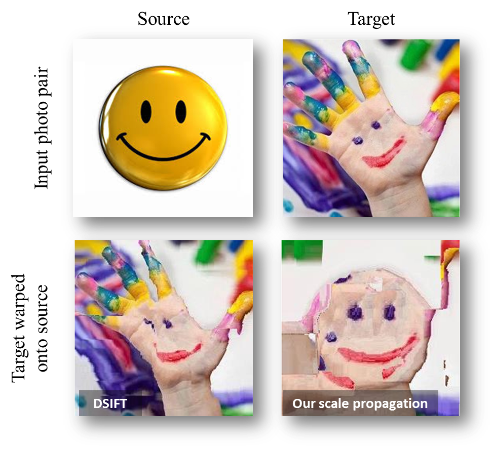

Dense Correspondences Across Scenes and Scales

Figure 1. Dense correspondences between the same semantic content ("smiley")
in different scenes and different scales. Top: Input images. Bottom:
Results visualized by warping the colors of the "Target" photo onto the "Source"
using the estimated correspondences from Source to Target. A good result has the
colors of the Target photo, located in the same position as their matching semantic
regions in the Source. Results show the output of the original SIFT-Flow method,
using DSIFT without local scale selections (bottom left), and our method (bottom
right).
Abstract: We seek a practical method
for establishing dense correspondences between two images with similar content,
but possibly different 3D scenes. One of the challenges in designing such a system
is the local scale differences of objects appearing in the two images. Previous
methods often considered only small subsets of image pixels; matching only pixels
for which stable scales may be reliably estimated. More recently, others have considered
dense correspondences, but with substantial costs associated with generating, storing
and matching scale invariant descriptors. Our work here is motivated by the observation
that pixels in the image have contexts -- the pixels around them -- which may be
exploited in order to estimate local scales reliably and repeatably. Specifically,
we make the following contributions. (i) We show that scales estimated in sparse
interest points may be propagated to neighboring pixels where this information cannot
be reliably determined. Doing so allows scale invariant descriptors to be extracted
anywhere in the image, not just in detected interest points. (ii) We present three
different means for propagating this information: using only the scales at detected
interest points, using the underlying image information to guide the propagation
of this information across each image, separately, and using both images simultaneously.
Finally, (iii), we provide extensive results, both qualitative and quantitative,
demonstrating that accurate dense correspondences can be obtained even between very
different images, with little computational costs beyond those required by existing
methods. .
Reference:
NEW! Moria Tau and Tal Hassner,
Dense Correspondences Across Scenes and Scales, IEEE Trans. on Pattern Analysis and Machine Intelligence (TPAMI), 38(5): 875-888 (2016)
(Earlier, shorter version appeared as:
Moria Tau and Tal Hassner,
Dense Correspondences Across Scenes and Scales, arXiv preprint
arXiv:1406.6323, 24 Jun. 2014)
Click
here for the full PAMI version PDF
Click here for the short ArXiv preprint PDF
Video talk from the Dec. 21st, 2014,
IDC Israel
Vision Day
Slides from the CVPR'14 tutorial on
Dense Image Correspondences for Computer
Vision, Columbus, Ohio, June. 2014 ( PPTX)
Downloads
Scale propagation code: Our MATLAB implementation of the scale propagation method is
available here.
If you find this code useful, please cite our paper.
April 18, 2016 New!
Yuval Nirkin
has shared a 3D reconstruction project which uses
OpemMVG,
SIFT flow and our
scale propagation method for 3D reconstruction from multiple views. In doing so,
both SIFT flow and our
scale propagation methods were ported to OpenCV compatible code.
- The 3D reconstruction code is available from a dedicated
github page.
- A pending OpenCV contribution with a port for SIFT flow and out scale
propagation is available on the
OpenCV github.
Other related papers / projects / codee
- T. Hassner, V. Mayzels, and L.
Zelnik-Manor, On SIFTs and their Scales, IEEE Conf. on Computer Vision
and Pattern Recognition (CVPR), Rhode Island, June 2012 (project and code,
PDF)
Copyright 2014, Moria Tau and Tal Hassner
The SOFTWARE ("scalemaps" and all included files) is provided "as is", without
any guarantee made as to its suitability or fitness for any particular use. It may
contain bugs, so use of this tool is at your own risk. We take no responsibility
for any damage that may unintentionally be caused through its use.
Last update
18th of April., 2016
|